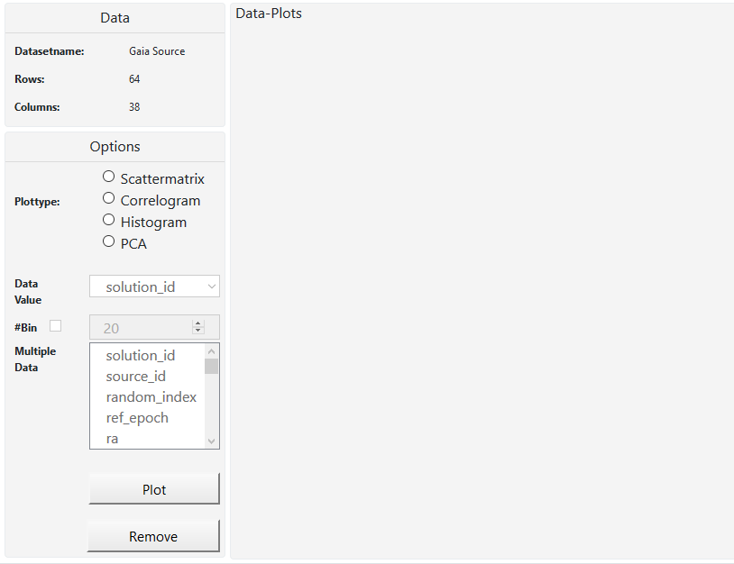
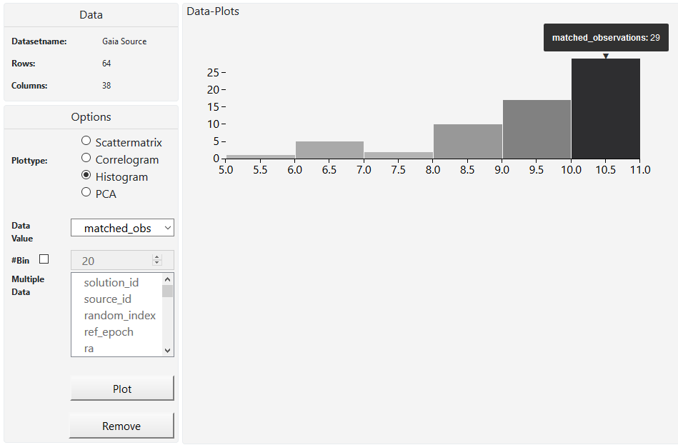
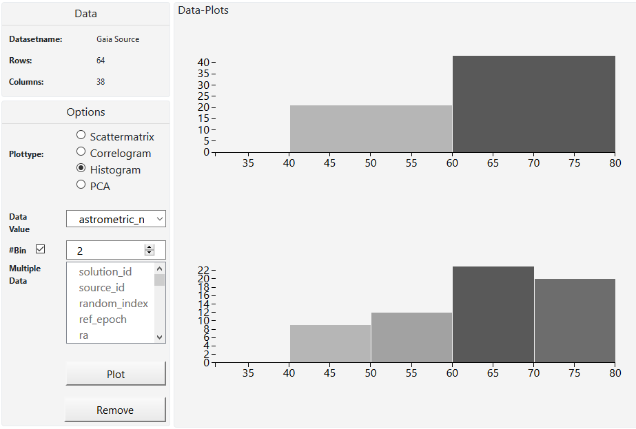
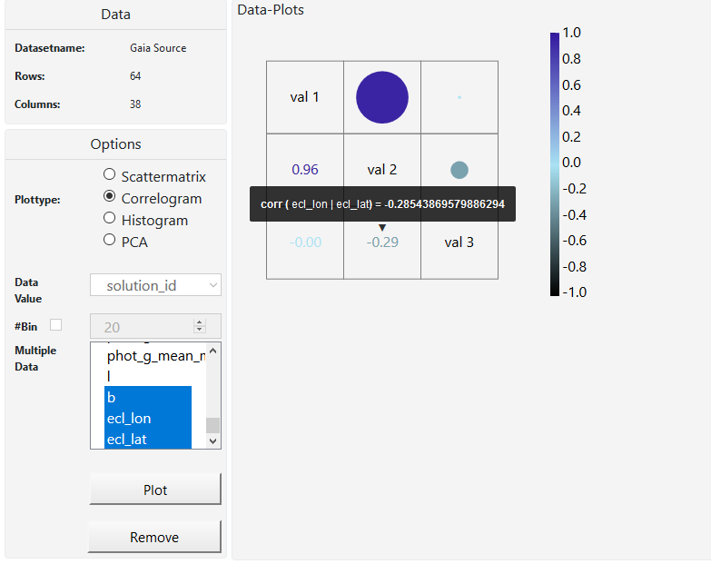
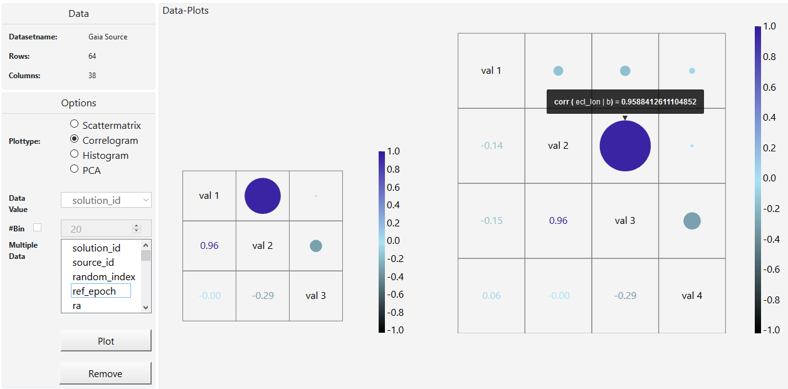
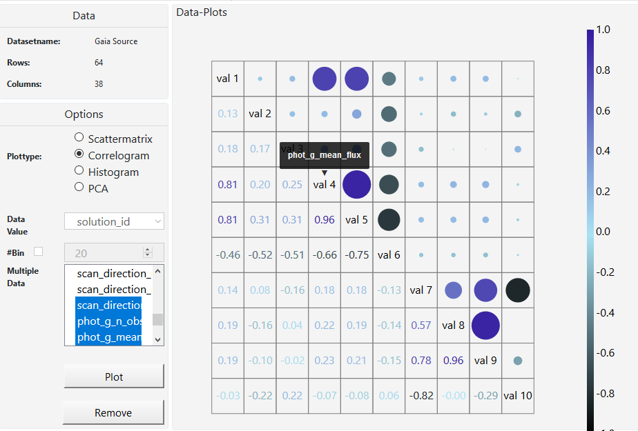

Task
Since the GAIA satelite is oberving millions of stars and scientists are only focusing on a small subset of the data, we wanted to provide a tool which gives information about the whole dataset.
We didn't really know much about the data, so we couldn't tell anything about the data itself, also it was too complicated for us to understand. So we focused on exploring the data by finding patters, correlations, outliers or maybe some other useful information.
Current visualization design
Gaia Project

Figure 1: Overview

Figure 2: Histogram. Automatic bin size calculation.

Figure 3: Histogram. The entered bin size.



Figure 4: Correlogramen for the chosen values
M2 use cases iteration
In M2 we described our use case scenario. We wanted to create a visualization tool for Joao Alves, who is an astrophysics professor at the university of Vienna. The main goal to achieve was a tool that gives astronomers a bigger picture of the universe because they only look at small areas most of the time. So we mainly focused on that and started with making a scatterplot. After that we decided to create a scatterplot matrix and histograms which shows how a subset of the data works together. A whole matrix with scatterplots helps us to look at many columns from our set at the same time, better than just one scatterplot. We made a correlogram which gives us a look on how the data in our subset or in the whole dataset correlates. What we didn't do, is analyzing clusters of stars or locating them. Our task is to help the user to find as many correlations in the data as possible (with the correlogram) and then study this data in a more detailed way (with histograms, scatterplots and PCA). Also we didn't have the time to create interaction between the plots, so the user is only able to view one plot at a time. Also the user cannot save. We will try to develop this further in M4.
Changes
After the feedback of M2 and a meeting with Mr. Möller we had to rethink our approach. We focused too much on details and requirements our customers mentioned and lost focus of providing a big picture of the data.
Between M2 and M3 we were building a program for a very specific task and not for exploring the data. Mr. Möller indicated us that we were on a wrong track and gave us some input to adapt it to the needs of the "Vis" class. One of the biggest changes is that we will not provide a 3D representation of the stars itself because this would be more a "Computer graphics problem" and not a "Visualization-problem". Therefore we decided to offer a scatterplot, scatterplotmatrix, barplot and a correlogram at the moment.
With these type of plots the user should be able to explore the data and gain interesting information about it.
Since the dataset is hug with many columns, we got the hint to use "Principal Component Analysis" to see patterns in the data and reduce columns.
Major challenges and problems
The biggest challenge of all is to handle the amount of data. Not only the dataset consists of almost 2 million stars, a single star also has 58 features (columns). At the moment it is challenging to filter out data and create a useful and meaningful plot out of it. Furthermore plotting so many information has a bad performance and is very time consuming in D3.
VIS Techniques
correlation over multiple var
filter
tooltips
brushing and linking
Work distribution
Nicole Cherches — correlations calculations, report, correlogram
Alexander Gelb — Scattermatrix, import data, Interface
Benjamin Neckam — PCA, report, import data
Axinya Tokareva — histogram, correlogram, website
References
Git repository
Presintation
1. https://medienportal.univie.ac.at/uniview/professuren/cv/artikel/univ-prof-dr-joao-alves/
2. http://vda.univie.ac.at/Teaching/Vis/17w/project.html
3. http://sci.esa.int/gaia/